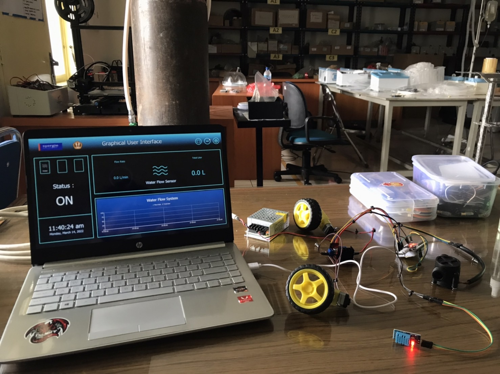
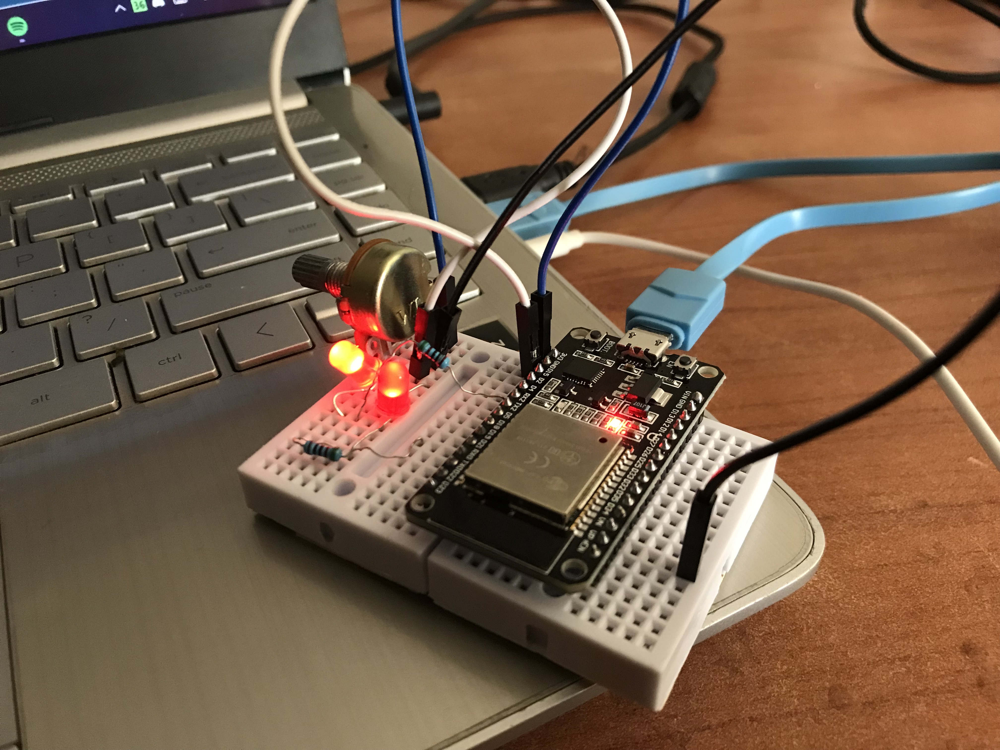
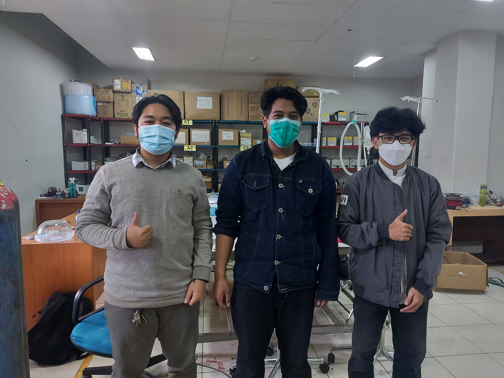
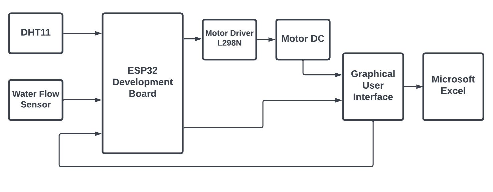

Sistem Monitoring dan Kendali Berbasis GUI
Sebuah sistem yang dirancang untuk memantau laju air, suhu, dan humiditas serta mengendalikan motor DC melalui antarmuka GUI dengan menggunakan protokol komunikasi MQTT




Proyek ini saya kerjakan ketika sedang magang di PT. Syergie Indo Prima sebagai bagian dari pemenuhan nilai mata kuliah kerja praktek industri (KPI).
Selama magang, saya dibimbing untuk mengembangkan sebuah sistem monitoring dan kendali yang dapat
diimplementasikan ke dalam GUI.
Pada GUI ini dilakukan monitoring terhadap laju air, suhu, dan humiditas, serta mengendalikan motor DC. Sistem ini dibangun menggunakan beberapa komponen utama, yaitu:
Pada GUI ini dilakukan monitoring terhadap laju air, suhu, dan humiditas, serta mengendalikan motor DC. Sistem ini dibangun menggunakan beberapa komponen utama, yaitu:
- Bahasa Pemrograman Python: Digunakan untuk menerima data dari Arduino IDE yang dikirimkan melalui MQTT, lalu menghubungkannya dengan GUI (Back-end)
- Bahasa Antarmuka QML: Digunakan untuk membangun tampilan Graphical User Interface (GUI) yang interaktif dan mudah digunakan (Front-end).
- ESP32 sebagai Mikrokontroler: Berperan sebagai otak dari sistem yang mengumpulkan data dari sensor dan mengirim serta menerima data melalui MQTT. Logika pada ESP32 dibuat di Arduino IDE.
- Sensor Laju Air: Digunakan untuk mengukur laju aliran air dalam sistem.
- Sensor DHT11: Sensor ini digunakan untuk mengukur suhu dan kelembaban udara.
- Motor Driver L298N dan Motor DC: Digunakan untuk mengendalikan pergerakan motor DC berdasarkan perintah yang diterima dari GUI.
- Protokol Komunikasi MQTT: Digunakan untuk komunikasi antara perangkat keras (ESP32 dan sensor) dengan GUI, memungkinkan pengiriman data secara real-time.
